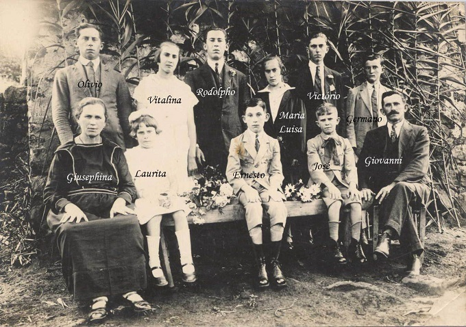

Pordenone, Itália → Barbacena, Brasil
Família Grizzo
Grice • Gris • Grissi
Uma jornada que começou na Itália em 1832 e floresceu no Brasil. Explore mais de 190 anos de história familiar, tradições e memórias que conectam gerações.
7+
Gerações
190+
Anos de História
200+
Membros da Família

Registro histórico familiar
Uma das primeiras fotografias da família, com membros identificados que ajudam a contar nossa história através das gerações.
Atualizações Recentes
Acompanhe as mais recentes adições e descobertas na nossa árvore genealógica
Novo membro da família
14/01/2025
nascimento
Nascimento de Maria Clara Grissi Santos
Casamento na família
19/11/2024
casamento
João Pedro Grissi casou-se com Ana Paula Silva
Correção genealógica
09/09/2024
atualizacao
Atualizadas datas de nascimento da geração de 1920-1930
Nova descoberta histórica
04/07/2024
descoberta
Encontrados registros de casamento em Pordenone, Itália (1885)